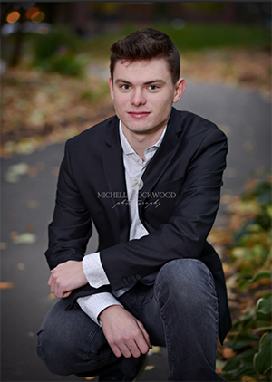

Welcome!
 Hello and welcome to my portfolio! My name is Logan Defoe and I am from Saint Paul, Minnesota. I currently attend DePaul University in Chicago, Illinois. For over five years I have been a passionate landscape, cityscape, and portrait photographer. I work with both digital and film phorography mediums. I develop and make all of my own prints for film photography and recently purchased all of my own dark room equipment. I also have some experience in printmaking. I have worked with silk screen prints, woodcut, linocut, and etching. I have won awards for both my photography and my silk screen and linocut prints. My different pages highlight my different skills so you can see examples of the work I create. I hope you enjoy my work!